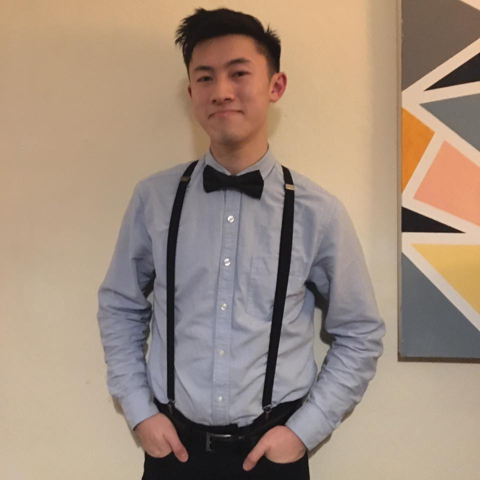

Please click on one of the buttons below to get started

About Me
My name is Kin Kwan Leung. I am a fourth-year mechanical engineering student currently
studying at The University of Manchester. Originally a computer science student, I
decided that a career that incorporates aspects of both mechanical engineering and
computer science would be my ideal career, hence I switched courses but continued to
hone my skills as a programmer. With my most familiar languages being Java, Python,
MATLAB and G-Code, I have also used the Arduino programming language for several projects
in the past. Having done an introductory course on HTML, CSS and JavaScript by Duke
University, I decided to develop my newfound skills by building a website from scratch,
resulting in the creation of this website. As a future mechanical engineer, I am eager to
learn about the manufacturing methods in the current world; especially in CNC machining
and additive manufacturing, and I have continued to do so through relevant course units
and self-reading.
My hobbies include salsa/bachata dancing and kayaking. During my time as the social
secretary of the Manchester University Canoe Club, the combination of planning,
organising and teamwork resulted in the nomination and award of Club Committee Member
of the Year by the University of Manchester Athletics’ Union.
 CV
CV